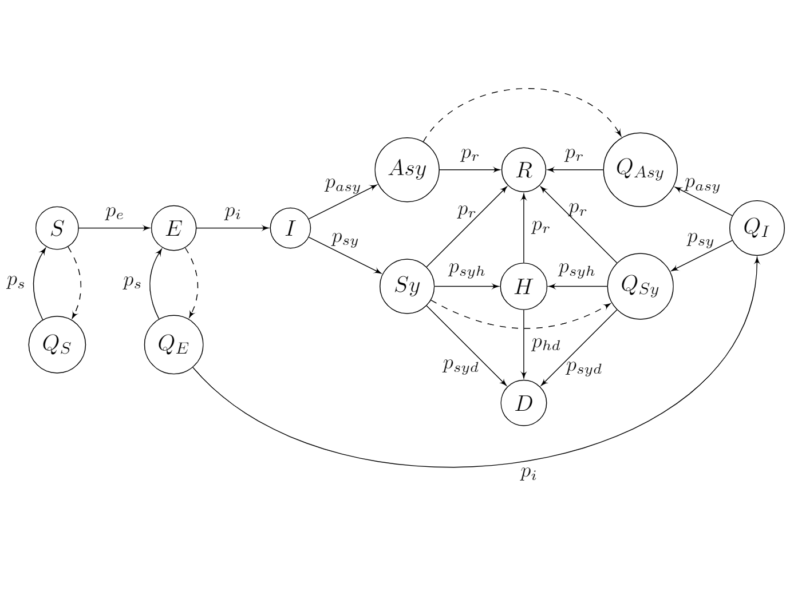
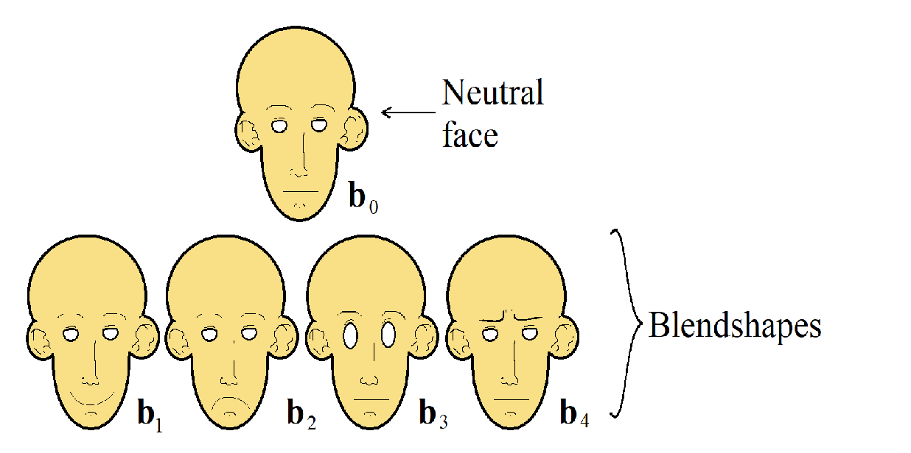
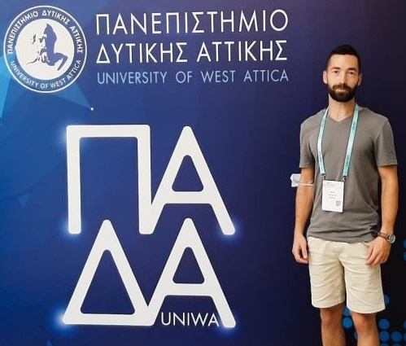
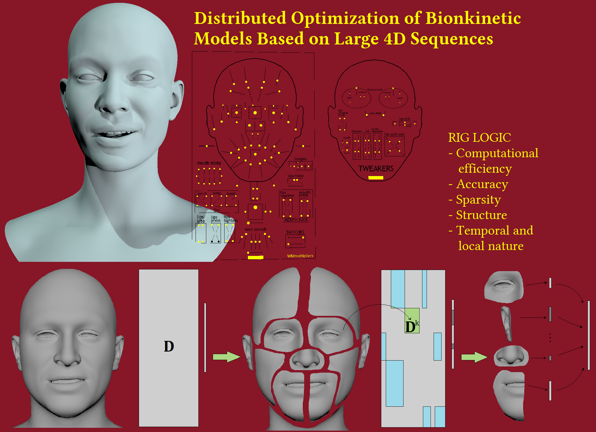
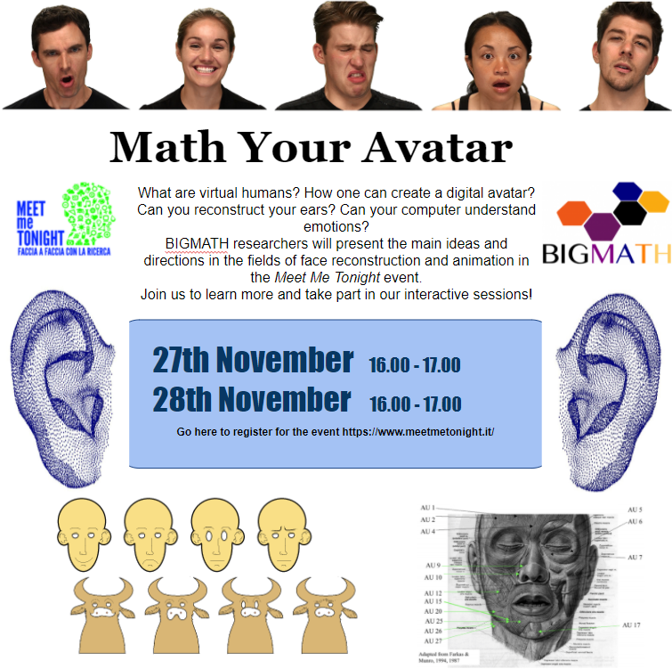
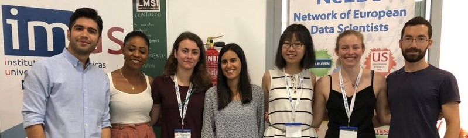
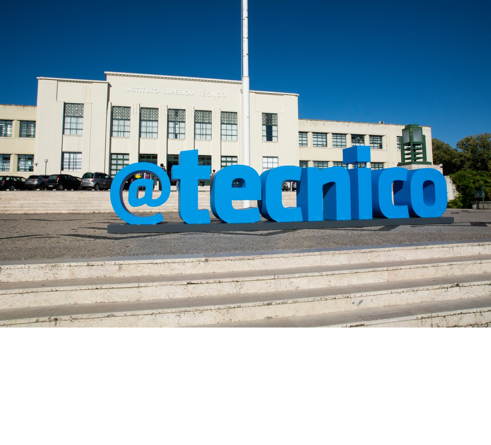
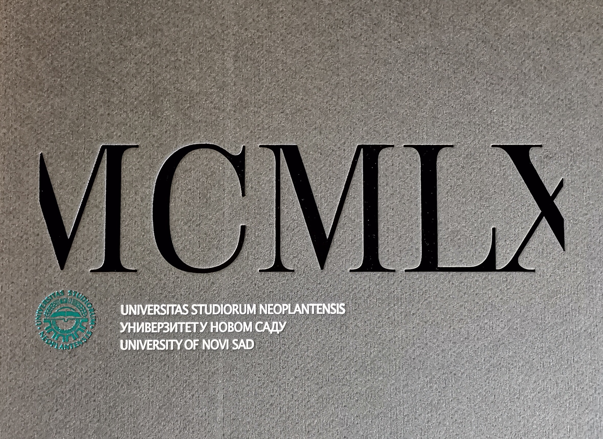
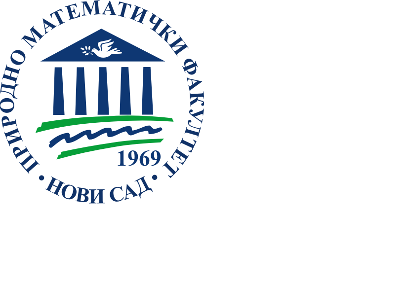

Curriculum Vitae
Here you can find some details of my career that (for some reason) I find important.
Here you can find some details of my career that (for some reason) I find important.

ECMI 2021 Students CompetitionMy two colleagues, Filipa Valdeira (University of Milan) and Greta Malaspina (University of Novi Sad), and I entered the student competition organized by ECMI. The goal was to give a mathematical model that would fit the data of COVID-19 in Great Britain and Israel - these are the two countries that initially had the highest percentage of the vaccinated population. And guess what!? We won!
We will present our solution at the Educational Committee of ECMI next spring, and now we are invited to make a full paper for publication - with more detailed experiments and final conclusions.

EUSIPCO 2021In August 2021, I had a chance to present our paper "Clustering of the Blendshape Facial Model" at the EUSIPCO. This was so exciting for me as this was my first publication, and it was such a great conference! For now, you can find the paper (and the scripts) in my github repository.

EURO 2021In July 2021, I was invited to present my research results at Εuro 2021, the largest and most important conference for Operational Research and Management Science (OR/MS) in Europe organized by EURO – the European Association of Operational Research Society and the Hellenic Operational Research Society (HELORS). It was great to go to a conference in person again! Not to mention that Greece is always nice.

3 MINUTE THESISDo you know what is a Rig Logic for animation? Check this short presentation of our research, submitted for the 3 Minute Thesis (3MT) contest at the EUSIPCO 2021 conference.
Our paper titled "Clustering of the Blendshape Facial Model" is accepted for publication in the proceedings of EUSIPCO 2021.
I find this conference very special - it only gathers young researchers, so the atmosphere is entirely different than usual. It is an excellent opportunity to meet other Ph.D. students with similar interests and share ideas or connect. I hope I'll be there next year again :)
In April 2021, I presented our research about Face Segmentation at the ECMI conference. We got some great feedback and support!
 AAAS Student E-poster Competition
AAAS Student E-poster CompetitionIn January 2021, me and my two colleagues from the University of Milan, Filipa Valdeira and Rongjiao Ji, entered the e-Poster competition for the graduate students within AAAS annual meeting 'Understanding Dynamic Ecosystems'. We entered with a poster titled 'Meet my Avatar' that merges the ideas from the three research fields: inverse rig estimation, face reconstruction, and emotion recognition. This yields a pipeline that would enhance avatar-based communication over social networks. Our poster won third place, and it will appear in the proceedings of the Science journal.

MeetMeTonightThis was an online and interactive event to provide a better picture of high-level math studies to the students and help them decide if they are interested in entering this field. I worked with my two colleagues from the University of Milano to create a fun and informative platform, and later we introduced our work and played with the attendees. This felt more like a game than a conference :)
In July 2019, we went to the ICIAM conference in Valencia to present the initial findings of our research (within a minisymposium organized by BIGMATH). This was a huge event - thousands of attendees, dozens of invited and keynote speakers... And there was also the King of Spain xD



From April 2018, I started working as a Junior Researcher at the Faculty of Sciences UNS, within an international project I-BiDaaS --- Industrial-Driven Big Data as a Self-Service Solution. My role is model for distributed implementation of the standard Machine Learning algorithms.
In May 2017, I presented my first Machine Learning project in the poster session at the ECMI SIG Workshop "Mathematics for Big Data," organized in Novi Sad.
In fall 2016, I entered a new study program at the Faculty of Sciences, University of Novi Sad: 'Applied Mathematics - Data Science.'

Bachelor in Applied Mathematics - Mathematics of FinanceIn fall 2016, I completed my Bachelor's studies at the Faculty of Sciences UNS: 'Applied Mathematics - Mathematics of Finance.' The program gave me a solid theoretical basis for advanced and more complex mathematical theories and a basis for applying the acquired knowledge in mathematical modeling of practical problems.